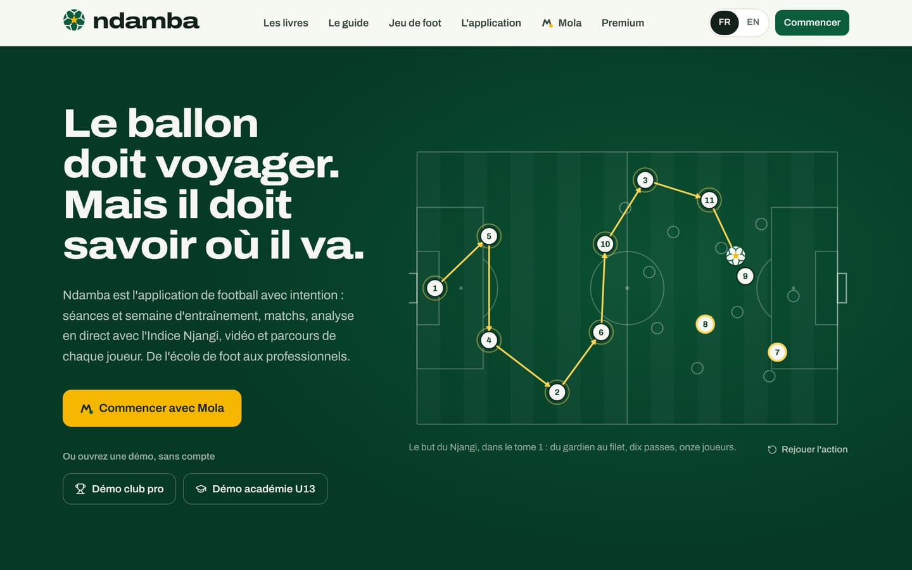
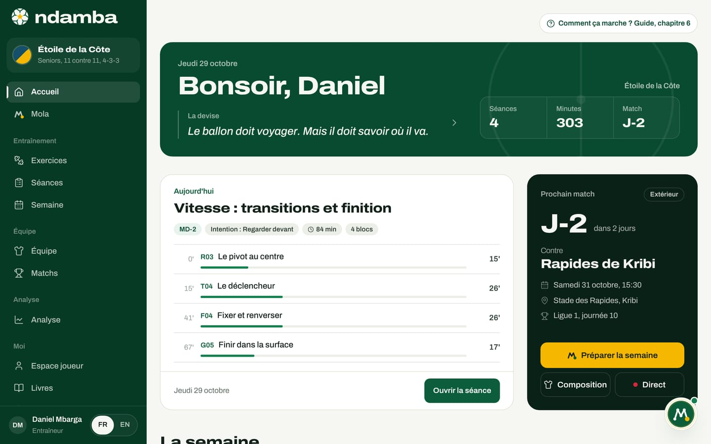
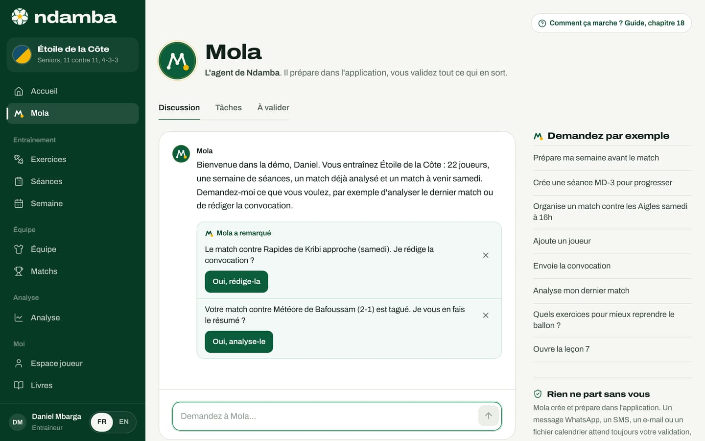

Ndamba en dix minutes
Ce qu’est Ndamba, à qui il sert, comment ses cinq pièces s’emboîtent (l’application, Mola, Le Code Njangi, Lionceaux et Lionceaux Football), la boucle de travail de la semaine, ce qui existe aujourd’hui et le but des quinze prochaines années.
11 min de lecture
Ndamba, c’est le mot de la rue camerounaise pour dire le football. C’est aussi une plateforme construite autour d’une seule idée, posséder avec intention, et d’une devise que vous retrouverez partout : « Le ballon doit voyager. Mais il doit savoir où il va. » Si vous n’avez que dix minutes, ce chapitre suffit pour comprendre ce que fait Ndamba, pour qui, ce qui fonctionne déjà et où le projet veut aller. Les chapitres suivants détaillent chaque écran, pas à pas.
Ndamba en une phrase
Ndamba aide une équipe de football, de l’école de foot à l’équipe première, à jouer avec une idée commune, à l’entraîner chaque jour et à vérifier, match après match, si elle l’applique vraiment.
Pour cela, la plateforme réunit cinq pièces qui parlent la même langue :
| Pièce | Ce que c’est | Pour qui | Où la trouver |
|---|---|---|---|
| L’application Ndamba | Entraînement, équipe, matchs, analyse et espace joueur | Entraîneurs, analystes, directeurs techniques, fédérations, joueurs, parents | Bouton Commencer du site, puis le menu de l’application |
| Mola | L’agent qui vous accueille par la conversation, puis agit dans l’application | Tout le monde | Commencer avec Mola, puis Mola dans le menu |
| Le Code Njangi | Le livre de la méthode : 36 chapitres en neuf parties, 64 fiches d’exercices | Entraîneurs, analystes, directeurs techniques | Les livres |
| Lionceaux, tome 1 : Le Ballon qui voyage | Le roman jeunesse : 40 chapitres, cinq parties, cinq pays, 40 Leçons du Ballon | Enfants de 8 à 12 ans, parents, éducateurs | Les livres |
| Lionceaux Football | Un jeu de football qui se joue dans le navigateur | Les enfants, et tous ceux qui aiment jouer | Jeu de foot |
Le site public les présente sur une seule page. En haut, la devise ; à droite, une action animée tirée du tome 1, du gardien jusqu’au filet ; dessous, deux boutons qui ouvrent une démo complète sans créer de compte.


L’application : cinq espaces
L’application range ses écrans en quatre groupes de menus, Entraînement, Équipe, Analyse et Moi, avec Accueil et Mola tout en haut. Derrière ces menus, il y a cinq espaces de travail.
L’entraînement. La bibliothèque des 64 exercices de la méthode, chacun animé comme une courte vidéo, avec ses consignes et ses intentions ; le constructeur de séances, qui assemble une séance en quelques touches ; la semaine, qui place chaque séance par rapport au prochain match (de MD-4 à MD-1, le chapitre 2 explique ces codes) et affiche la charge.
L’équipe. L’effectif, la fiche de chaque joueur avec ses dix compétences notées de 1 à 4, son parcours saison après saison et les observations du staff.
Le match. L’adversaire, le système, la composition sur le terrain, le plan de jeu des quatre moments et la convocation par WhatsApp ou SMS, préparée dans l’application et envoyée par vous.
L’analyse. Le match se filme avec un téléphone, sa vidéo se met sur YouTube ou Facebook (Ndamba ne stocke aucune vidéo), puis se code dans le studio : une touche par action, au bon moment, au ralenti si besoin, et chaque code peut être revu. Sans vidéo, on code en direct depuis la touche, avec les mêmes boutons. L’Indice Njangi, un score de 0 à 100, se calcule à mesure que vous codez. Le rapport de match détaille ses cinq sous-indices et propose les exercices de la semaine suivante. Une analyse IA payante, faite par Claude sur les images du fichier vidéo, ajoute des estimations de possession, de territoire et de bloc.
L’espace joueur. Pour les plus jeunes : les défis du jour, les 40 Leçons du Ballon, le carnet du Njangi et le parcours. À partir de 16 ans : un espace performance avec la semaine, la forme, la charge et le dernier match.


Mola, l’agent qui agit
« Mola », c’est « l’ami » en camfranglais. Dès que vous touchez Commencer avec Mola, il vous accueille par une conversation : vous répondez à quelques questions, il remplit votre profil pendant que vous parlez et crée votre espace. Ensuite, il agit dans l’application avec les mêmes outils que vous. Vous pouvez lui écrire, par exemple, « Prépare ma semaine avant le match », « Crée une séance MD-3 pour progresser » ou « Analyse mon dernier match ».
Mola sait préparer la semaine avant un match, créer une séance, organiser un match, ajouter des joueurs ou créer l’équipe, rédiger la convocation, analyser le dernier match avec l’Indice Njangi, proposer des exercices du Code Njangi, ouvrir une Leçon du Ballon ou un chapitre du roman, et exporter la semaine dans votre calendrier.
Une règle ne change jamais : Rien ne part sans vous. Mola crée et prépare à l’intérieur de l’application. Un message WhatsApp, un SMS, un e-mail ou un fichier calendrier attend toujours votre accord dans l’onglet À valider, et c’est vous qui envoyez.
Mola fonctionne avec un moteur de règles intégré à l’application. Quand le serveur dispose d’une clé pour un modèle d’intelligence artificielle (Anthropic), Mola comprend mieux les phrases libres ; sans elle, le moteur de règles répond seul.


Deux livres et un jeu
Le Code Njangi est le livre de la méthode, écrit par William Foteping pour les entraîneurs et les analystes, de l’école de foot aux sélections nationales. Il pose le modèle de jeu (les quatre moments, les cinq intentions de la possession, les rôles), la formation des jeunes en Afrique, la semaine périodisée, l’Indice Njangi et le rapport de match, et dix mesures pour une fédération. Ses 64 exercices, avec leurs schémas, sont ceux de l’application : le bouton Lire dans le livre d’une fiche d’exercice renvoie au livre.
Lionceaux est la saga jeunesse qui raconte la même méthode aux enfants. Dans le tome 1, Le Ballon qui voyage, deux frères camerounais, BriBri (12 ans) et Kaydoudou (10 ans), suivent leurs parents de Douala au Maryland, puis en France, en Catalogne et à Londres. Dans chaque pays, ils apprennent une pièce du football. Les 40 Leçons du Ballon du roman sont dans l’espace joueur de l’application. Six tomes sont prévus ; le tome 1 est publié.
Les deux livres se lisent librement en ligne, chapitre par chapitre, quelle que soit votre formule. C’est une règle du projet : les livres et les exercices ne sont jamais payants.
Lionceaux Football est le jeu vidéo de l’univers : le tournoi de vacances interquartiers, un match à onze sur un terrain en terre rouge, seize équipes de Douala et de Yaoundé, dont les clubs du livre. Il se joue au doigt sur un téléphone, à la manette ou au clavier, directement dans le navigateur.

À qui sert Ndamba
Ndamba connaît six rôles, que vous choisissez en parlant avec Mola : Entraîneur ou éducateur, Joueur ou joueuse, Analyste, Parent, Manager ou directeur technique et Fédération ou ligue. Le chapitre 3 montre ce que chacun voit et le chemin qui lui convient.
La promesse est la même pour tous : les mêmes mots et les mêmes exercices des U8 à l’équipe première, pour l’éducateur de quartier comme pour le staff d’un club de Ligue 1. Deux démos le montrent. La Démo club pro ouvre l’Étoile de la Côte, un club professionnel de Douala : 22 joueurs, l’entraîneur Daniel Mbarga, un match gagné 2‑1 et codé en direct, et la semaine avant un déplacement à Kribi. La Démo académie U13 ouvre les Lionceaux de Bonamoussadi U13, l’équipe de Kaydoudou et BriBri dans le roman : 15 joueurs, quatre séances dans la semaine, quatre matchs déjà analysés et un match à venir le samedi. Ces clubs et ces joueurs sont des personnages de démonstration.

La boucle : planifier, entraîner, jouer, analyser, apprendre
Tout Ndamba tient dans une boucle que l’équipe parcourt chaque semaine. Voici comment elle se déroule dans l’application.
- Planifier. Vous ajoutez le prochain match avec Nouveau match. Sur l’accueil, la carte Prochain match affiche le compte à rebours ; le bouton Préparer la semaine crée les séances qui manquent sur les jours MD-4 à MD-1 encore à venir. Il laisse libres le jour d’un autre match et son lendemain, réservé à la récupération.
- Entraîner. Chaque séance est faite d’exercices du livre, avec leurs minutes et leur intention. La carte Aujourd’hui montre la séance du jour ; Ouvrir la séance l’affiche en détail.
- Jouer. La feuille de match porte la composition et le plan de jeu. Mola rédige la convocation, vous la validez et l’envoyez. Le jour du match, le bouton Direct ouvre le pupitre de codage.
- Analyser. Pendant le match, vous touchez un bouton par action : passe réussie, ligne traversée, entrée dans la surface, perte, reprise en 5 secondes. À la fin, le rapport donne l’Indice Njangi, ses cinq sous-indices et le point faible du jour.
- Apprendre. Le rapport propose les exercices qui travaillent ce point faible, et l’accueil propose de préparer la semaine suivante sur l’intention correspondante. Les joueurs, eux, apprennent avec les leçons, les défis, le carnet et leur parcours. Puis la boucle recommence.
Prenons la démo club pro. L’Étoile de la Côte a battu le Météore de Bafoussam 2‑1. Le rapport affiche un Indice Njangi de 67,9 sur 100, lu « Njangi solide ». Quatre sous-indices sont solides ; la Fixation, à 8,3 sur 20, est la plus faible. L’accueil en tire la conclusion : la semaine suivante travaillera l’intention « Fixer », et le bouton Préparer la semaine sur « Fixer » le fait en une touche. Dans la démo, la semaine est déjà prête : sa séance MD-3 du mercredi porte justement sur l’intention « Fixer ».

Comment les pièces se tiennent
Les cinq pièces ne sont pas posées côte à côte : elles se nourrissent. Le livre de la méthode fournit à l’application ses 64 exercices, ses quatorze codes de match et la formule exacte de l’Indice Njangi (son chapitre 32). Le roman fournit à l’espace joueur ses 40 Leçons du Ballon et les cinq pièces du Njangi qui servent à éduquer les enfants. Mola utilise les mêmes fonctions que les boutons de l’application : quand il prépare une semaine, c’est le même calcul que Préparer la semaine. Le jeu, enfin, fait entrer les enfants dans l’univers par le plaisir.
Le résultat, c’est un vocabulaire unique. Le mot « Fixer » désigne la même chose dans le chapitre 5 du livre, sur la fiche d’un exercice, dans le rapport d’un match et dans la semaine que Mola prépare. Un enfant qui lit la leçon du jour, son éducateur qui prépare la séance et le directeur technique qui lit le rapport parlent du même football.
Ce qui existe aujourd’hui
Au moment où ce guide est écrit (octobre 2026), voici ce qui fonctionne et que vous pouvez ouvrir vous-même :
- le site public : l’accueil, Les livres, Premium, la page de la marque, la revue du projet et la conversation d’accueil avec Mola ;
- l’application complète, en français et en anglais : les 64 exercices, les séances, la semaine, l’effectif et les fiches des joueurs, les matchs et les convocations, le codage des matchs sur vidéo ou en direct, le rapport et l’Indice Njangi, le studio vidéo et l’analyse IA, l’espace joueur, les leçons, le carnet et le parcours, les réglages ;
- Mola, avec son onglet Discussion, ses Tâches et ses actions À valider ;
- les deux livres en lecture libre, et le jeu Lionceaux Football ;
- deux démos complètes, ouvertes sans compte.
Et voici ce qui n’existe pas encore, dit clairement. Il n’y a pas de comptes utilisateurs ni de synchronisation : vos données restent dans le navigateur de l’appareil, et vous les sauvegardez vous-même en exportant un fichier depuis Réglages. Les formules et leurs prix sont affichés, mais les paiements ne sont pas branchés : le bouton Activer (démo) active une formule sans aucun paiement, et la page le dit. Les comptes du staff, la synchronisation, les paiements par Mobile Money et par carte, et la suite de la saga sont prévus ; le chapitre 26 en donne la feuille de route.
Le but : porter le trophée dans les quinze prochaines années
Pourquoi tout cela ? Parce qu’aucune nation africaine n’a encore gagné la Coupe du monde. Le meilleur résultat africain reste la demi-finale du Maroc en 2022. Le Cameroun, recordman africain avec huit participations, a ouvert la voie en 1990 avec le premier quart de finale africain, quand Roger Milla, à 38 ans, marquait quatre buts et dansait au poteau de corner. Il a manqué l’édition 2026.
La conviction de Ndamba est simple : le talent n’est pas ce qui manque à l’Afrique. Ce qui manque, c’est la continuité. Un même modèle de jeu de la première académie à l’équipe nationale, des entraîneurs formés à ce modèle, et une mesure commune, l’Indice Njangi, pour qu’une fédération voie, saison après saison, si ses joueurs possèdent vraiment avec intention.
Le but est de porter le trophée dans les quinze prochaines années, en 2030, en 2034 ou en 2038. Le plan propose cinq étapes, avec des objectifs proposés et non des résultats : « Le premier cercle » (2026 à 2027, des clubs et académies pilotes), « La ligue » (2028 à 2029), « Les sélections de jeunes » (2030), « La génération » (2031 à 2034) et « Le trophée » (2035 à 2041). Le chapitre 23 développe chaque étape et ses repères.